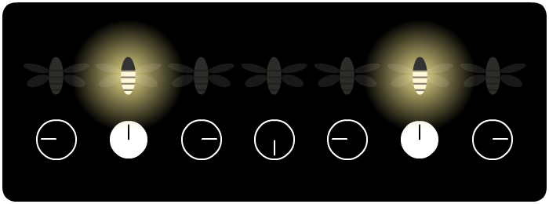

"גחליליות"
כמו אורות חג המולד המרחפים באויר בעדינות, גחליליות תמיד מוסיפות קצת קסם ליערות בהם הן חיות.

אולם כמה זנים של גחליליות מוסיפים אפילו יותר קסם. בדרום-מזרח אסיה, אם תצאו אל שפת הנהר בעומק הלילה, יוצג פניכם מופע האורות המהמם הזה - באדיבות הגחלילית התאילנדית:
יער מנגרובים שלם, מואר בבת אחת, צולל לאפלה ואז מואר מחדש - בסינכרון כמעט מושלם. כיצד אלפי הגחליליות מתאמות זו עם זו? מיהו המנצח של הסימפוניה הדוממת הזו?
זו הייתה תעלומה במשך כמעט מאה שנה ובשנת 1992 צוות של מדענים מארה"ב יצא לדרך כדי לפתור אותה. באופן מצער, אך לא מפתיע, התקשורת לעגה להם - "הממשלה שורפת את כספי המיסים שלכם כדי לחקור גחליליות בבורנאו: לא רעיון מבריק!" נכתב בצהובון אחד. מבלי להירתע, המדענים המשיכו בדרכם, בידיהם מצלמות ומחשבונים.
אם כן, כיצד אלפי גחליליות בוחרות מנהיג כדי לעקוב אחריו, מאסטרו שיקפיד שיהבהבו בזמן? התשובה, מצאו המדענים, פשוטה:
הן לא.
לכל גחלילית בנפרד יש שעון פנימי אישי, ובכל פעם שהשעון "מורה על חצות", היא מהבהבת.

במקום להתאים את השעון שלהן למנהיג מרכזי, כל גחלילית עושה כלהלן:
שלב 1: כשאת רואה גחלילית קרובה מהבהבת, קדמי את השעון שלך מעט.
שלב 2: זהו.
האם אינטראקציה כה קטנה וקצרת-טווח באמת מסוגלת לגרום ליער שלם של גחליליות להבהב בהרמוניה מתואמת? יש רק דרך אחת לגלות...
חכו. צפו בעיון.
מה אתם רואים?
בתחילה, לא הרבה. נראה כי הגחליליות עדיין מהבהבות ללא חוקיות.
אבל לאחר זמן מה, אולי תשימו לב ל-"כתמים" של גחליליות מהבהבות יחד - אבל ה-"כתמים" השונים עדיין לא מתואמים.
אחרי עוד קצת זמן, אתם מתחילים לראות את הגחליליות עושות "גל", כמו אוהדים נלהבים ביציעים במשחק כדורגל.
לבסוף, כל הגחליליות פרט לבודדות מהבהבות יחד - ובסופו של דבר, גם המאחרות האלו מצטרפות לריקוד הקולקטיבי.
מה עוד יותר מדהים? אם אתם מפריעים לגחליליות על-ידי יצירת בלגאן...
... כן, זה יכול לגרום להן להתפצל לרגע, אך לאט ובטוח, הן יתאפסו מחדש, ויבהבו כאחת.
הנה עוד כמה כפתורים ומחוונים לשימושכם, כדי לשחק עם הגחליליות הוירטואליות האלו:
וזהו הסוד מאחורי תרגיל הקסמים של הגחליליות שלנו:
כפי שמסתבר, גחליליות אינן הדבר היחיד אשר מסנכרן את עצמו "מלמטה ללמעלה". הנוירונים שלכם יוצרים גלי מוח. תאי הקצב בלבכם מופעלים באופן מתואם. אפילו אוסף מטרונומים חסרי חיים על משטח לא יציב יתחילו לצעוד ביחד. מעבר לכל זה, הבנת תהליכי סינכרון-עצמי עזרה לנו לבנות לייזרים, מחשבים ווכנולוגיית תקשורת טובים יותר!
ולחשוב, שהמתמטיקה של מערכות סינכרון-עצמי התגלתה בין השאר על-ידי כמה מדענים שפשוט ממש אהבו גחליליות. נראה שלקרוא לפרויקט שלהם "רעיון לא מבריק" היה רעיון לא מבריק.
. . .
אתם מרחפים לכם, בעדינות, בדממה, מדי פעם מדגישים את החשיכה עם נקודה קטנה של אור בהיר. כאשר אתם לבדכם, אין הרבה ממה להתרשם.
אבל בכל פעם שאתם מאירים, אתם נותנים השראה לאלו הקרובים אליכם להאיר גם כן, מעט מוקדם יותר מאשר היו עושים אחרת. ואלו הקרובים אליכם, בתורם, יתנו השראה לאלו הקרובים אליהם.
וכן הלאה, וכן הלאה.
תחילה, כמה קבוצות קטנות מתחילות להבהב יחד. אז, גל של אור חולף על פני הנחיל. לבסוף, כולם מנצנצים ביחד, מגדלור בוהק, כולם בהרמוניה, בתיאום - בסנכרון.
איזו אינטראקציה בסדר גודל קטן תיצרו היום, גחליליות קטנות?
השראה מספרו של סטיבן סטורגץ,
SYNC: How Order Emerges From Chaos In the Universe, Nature, and Daily Life
נוצר על ידי ניקי קייס, באמצעות האהבה והתמיכה של הפטרונים שלי: (ראו את כולם כאן)
תורגם לעברית על ידי טל עינת.
"גחליליות" הוא קוד פתוח, מוקדש לנחלת הכלל. (השיגו את הקוד ב-Github!)
שתפו עם הנחיל שלכם:
המקור באנגלית:
Fireflies
תרגומי אוהדים:
中文 (chinese)
português (brazilian portuguese)
français (french)
deutsche (german)
türkçe (turkish)
pусский (russian)